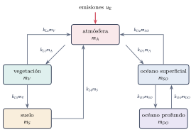
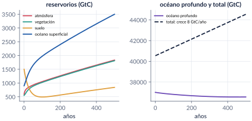
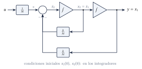
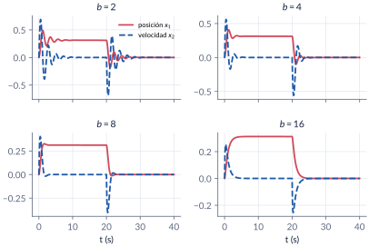
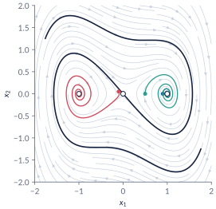
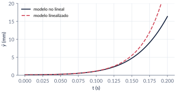
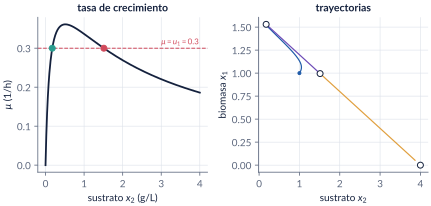

4. Representación en espacio de estado
Semanas 4–5 · dos clases
Hasta ahora describimos los sistemas con funciones de transferencia: una relación entre una entrada y una salida. La representación en espacio de estado los describe con ecuaciones diferenciales de primer orden, una por cada variable que hace falta para conocer su futuro: el estado. Es más general (sistemas no lineales, de varias entradas y salidas) y muestra lo que pasa por dentro. En esta parte escribimos modelos de estado —en particular en variables de fase—, pasamos de función de transferencia a estado y de vuelta, resolvemos la ecuación de estado con la matriz de transición \(e^{\mathbb A t}\) y linealizamos modelos de varias variables: un levitador magnético, un bioreactor y la ecuación de Duffing.
Al terminar esta parte usted podrá
- Definir el estado de un sistema y escribir su representación en espacio de estado, en particular en variables de fase.
- Pasar de una función de transferencia a una representación de estado, y de vuelta, y relacionar los valores propios de \(\mathbb A\) con los polos.
- Resolver la ecuación de estado con la matriz de transición \(\Phi(t)=e^{\mathbb A t}\).
- Linealizar un modelo no lineal de varias variables alrededor de un equilibrio y escribirlo en espacio de estado.
Ruta de las clases
| Clase | Qué se ve | Handout | Scripts |
|---|---|---|---|
| 1 | Historia; el ciclo del carbono; el estado; variables de fase; masa-resorte y computador analógico; de la función de transferencia al estado | §4.1–4.4 | C4_Ej1, C4_Ej2, C4_Ej5, crearModelo_MasaResorte |
| 2 | Matriz de transición; del estado a la función de transferencia; valores propios y polos; linealización: Duffing, levitador, bioreactor | §4.5–4.7 | C4_Ej3, C4_Ej4, C4_Ej6, C4_Ej7, crearModelo_Bioreactor |
Lo esencial, en una página
Estado y modelo lineal
El estado es el conjunto más pequeño de variables cuyo valor en \(t_0\), junto con las entradas para \(t\ge t_0\), determina todo el comportamiento futuro. Su número (el orden) es único; las variables no. Para un sistema lineal e invariante,
\[ \dot x=\mathbb A x+\mathbb B u,\qquad y=\mathbb C x+\mathbb D u . \]


Variables de fase
Para \(y^{(n)}+a_{n-1}y^{(n-1)}+\dots+a_0y=b_0u\), con \(x_1=y\), \(x_2=\dot y\), …, \(x_n=y^{(n-1)}\):
\[ \mathbb A=\begin{bmatrix}0&1&\cdots&0\\\vdots&&\ddots&\vdots\\0&0&\cdots&1\\-a_0&-a_1&\cdots&-a_{n-1}\end{bmatrix},\qquad \mathbb B=\begin{bmatrix}0\\\vdots\\0\\b_0\end{bmatrix},\qquad \mathbb C=\begin{bmatrix}1&0&\cdots&0\end{bmatrix}. \]
Si hay ceros, se usa una variable intermedia \(Z(s)=U(s)/\text{den}(s)\) y los coeficientes del numerador van en \(\mathbb C\). tf2ss de MATLAB numera los estados al revés.


Solución y función de transferencia
\[ x(t)=e^{\mathbb A t}x(0)+\int_0^t e^{\mathbb A(t-\tau)}\mathbb B\,u(\tau)\,\mathrm d\tau,\qquad \Phi(t)=e^{\mathbb A t}=\mathcal L^{-1}\{(s\mathbb I-\mathbb A)^{-1}\}, \]
\[ G(s)=\mathbb C(s\mathbb I-\mathbb A)^{-1}\mathbb B+\mathbb D . \]
Los polos de \(G\) son valores propios de \(\mathbb A\), pero una cancelación puede esconder valores propios. Un cambio de variables \(x=\mathbb T\bar x\) cambia las matrices y no cambia \(G\) ni los valores propios.
Una función de transferencia que esconde modos
Con \(\mathbb A\) de valores propios \(-1\), \(-2\), \(-3\) y \(\mathbb C=[2\;\,3\;\,1]\), \(G(s)=\dfrac{(s+1)(s+2)}{(s+1)(s+2)(s+3)}=\dfrac{1}{s+3}\). Los modos \(e^{-t}\) y \(e^{-2t}\) siguen en el estado, pero no llegan a la salida.
Linealización
Alrededor de un equilibrio \(f(x^*,u^*)=0\): \(\dot{\hat x}=\mathbb A\hat x+\mathbb B\hat u\) con \(a_{ij}=\partial f_i/\partial x_j\) y \(b_{ij}=\partial f_i/\partial u_j\) evaluadas en \((x^*,u^*)\). Cada equilibrio tiene su propio modelo.



Códigos de esta parte
Los bloques salen directamente de los archivos del repositorio. Ejecute antes iniciarCurso.
Modelo en variables de fase (§4.3).
M = 2; k = 16; b = 2;
A = [0 1; -k/M -b/M]; B = [0; 1/M]; C = [1 0]; D = 0; % x1 = y, x2 = y'
sistema = ss(A, B, C, D)
eig(A)Cuatro amortiguamientos.
t = 0:0.01:40; u = 5*(t < 20); % pulso de 5 N durante 20 s
for b = [2 4 8 16]
A = [0 1; -k/M -b/M];
[~, ~, x] = lsim(ss(A, B, C, D), u, t);
subplot(2, 2, find(b == [2 4 8 16]));
plot(t, x(:,1), t, x(:,2), '--'); grid on; title(sprintf('b = %d', b));
fprintf('b = %2d: valores propios %s\n', b, mat2str(eig(A).', 3));
end
legend('posición x_1', 'velocidad x_2');Variables de fase (§4.4).
den = [1 9 26 24];
A = [0 1 0; 0 0 1; -fliplr(den(2:end))] % última fila: -a0 -a1 -a2
B = [0; 0; 24]; C = [1 0 0]; D = 0; % x1 = y, x2 = y', x3 = y''
tf(ss(A, B, C, D))Con ceros: la función variablesFase.
num = [1 7 2]; % Y = (s^2 + 7s + 2) Z, Z = U/den
[Af, Bf, Cf, Df] = variablesFase(num, den) % C = [2 7 1]: coeficientes del numerador
tf(ss(Af, Bf, Cf, Df))tf2ss y el orden de los estados.
[A1, B1, C1, D1] = tf2ss(num, den) % primera fila -9 -26 -24
P = fliplr(eye(3)); % invertir el orden de los estados
A2 = P*A1*P, B2 = P*B1, C2 = C1*P % = variables de fase
tf(ss(A1, B1, C1, D1)) - tf(ss(A2, B2, C2, D1)) % diferencia nulaResolvente y antitransformada (§4.5).
syms s t
Phi_s = inv(s*eye(2) - A) % resolvente (sI - A)^-1
Phi_t = simplify(ilaplace(Phi_s, s, t)) % matriz de transiciónexpm y sus propiedades.
t1 = 0.5; t2 = 1.2;
P1 = expm(A*t1)
norm(expm(A*(t1 + t2)) - expm(A*t1)*expm(A*t2)) % ~ 0
norm(inv(expm(A*t1)) - expm(-A*t1)) % ~ 0Respuesta forzada.
tt = 0:0.01:6;
[~, ~, x] = lsim(ss(A, B, eye(2), 0), ones(size(tt)), tt);
x1 = 1/2 - exp(-tt) + exp(-2*tt)/2; % de x(t) = int_0^t e^{A(t-tau)} B dtau
max(abs(x(:,1)' - x1)) % ~ 0
xl = expm(A*2)*[1; -1] % respuesta libre: = e^-2 [1; -1]ss2tf, eig, dcgain (§4.6).
A = [0 1; -6 -5]; B = [0; 1]; C = [1 0]; D = 0;
[num, den] = ss2tf(A, B, C, D) % 1/(s^2 + 5s + 6)
eig(A), roots(den) % los mismos: -2 y -3
dcgain(ss(A, B, C, D)) % 1/6Cancelaciones.
A = [0 1 0; 0 0 1; -6 -11 -6]; B = [0; 0; 1];
Ga = zpk(minreal(tf(ss(A, B, [1 0 0], 0))))
Gb = zpk(minreal(tf(ss(A, B, [2 3 1], 0)))) % solo queda el polo en -3
eig(A)Forma diagonal.
[T, L] = eig(A); % columnas de T: vectores propios
Ad = T\A*T % diagonal
Bd = T\B; Cd = [1 0 0]*T;
tf(ss(Ad, Bd, Cd, 0)) - Ga % la función de transferencia no cambia
norm(T*expm(L*1)/T - expm(A*1)) % Phi(t) = T diag(e^{lambda t}) T^-1Matrices y valores propios (§4.2).
kL1 = 0.0842; kL2 = 0.0684; kL3 = 0.0159; kL4 = 0.0332; % 1/año
kO1 = 0.0846; kO2 = 0.0433; kO3 = 0.0011; kO4 = 0.0001;
A = [-(kO1+kL1) kL2 kL4 kO2 0
kL1 -(kL2+kL3) 0 0 0
0 kL3 -kL4 0 0
kO1 0 0 -(kO2+kO3) kO4
0 0 0 kO3 -kO4];
B = [1; 0; 0; 0; 0];
sum(A) % ceros: conservación de la masa
lambda = eig(A)
tau = -1./lambda(abs(lambda) > 1e-9) % constantes de tiempo (años)500 años de emisiones.
x0 = [590; 550; 1500; 900; 37000]; % GtC
t = 0:1:500; uE = 8*ones(size(t)); % GtC/año
[~, ~, x] = lsim(ss(A, B, eye(5), 0), uE, t, x0);
plot(t, x(:,1:4)); grid on; xlabel('años'); ylabel('GtC');
legend('atmósfera', 'vegetación', 'suelo', 'océano superficial');
total = sum(x, 2); (total(end) - total(1))/500 % 8 GtC/año
x(end, :)Duffing (§4.7).
delta = 0.3;
J = @(x1) [0 1; 1 - 3*x1^2, -delta]; % jacobiano
for x1 = [0 1 -1]
fprintf('equilibrio (%2d, 0): valores propios %s\n', x1, mat2str(eig(J(x1)).', 4));
endLevitador magnético.
M = 0.05; R = 10; L = 0.5; Cf = 1e-3; g = 9.81; ydes = 0.01;
f = @(t, x, u) [x(2); g - Cf/M*x(3)^2/x(1); -R/L*x(3) + u/L];
x3e = sqrt(M*g*ydes/Cf); ue = R*x3e; % equilibrio
A = [0 1 0; Cf*x3e^2/(M*ydes^2) 0 -2*Cf*x3e/(M*ydes); 0 0 -R/L];
B = [0; 0; 1/L];
eig(A)
G = zpk(ss(A, B, [1 0 0], 0))
[tn, xn] = ode45(@(t, x) f(t, x, ue), [0 0.2], [ydes + 1e-4; 0; x3e]);
[yl, tl] = initial(ss(A, B, [1 0 0], 0), [1e-4; 0; 0], 0.2);
plot(tn, 1e3*(xn(:,1) - ydes), tl, 1e3*yl, '--'); grid on;
xlabel('t (s)'); ylabel('desviación de y (mm)'); legend('no lineal', 'lineal'); ylim([0 20]);Bioreactor: equilibrios.
mumax = 0.53; km = 0.12; k1 = 0.4545; Y = 0.4; u1 = 0.3; u2 = 4;
x2e = sort(roots([u1*k1, u1 - mumax, u1*km])) % mu(x2) = u1: dos soluciones
x1e = Y*(u2 - x2e) % y el lavado: (0, u2)Bioreactor: jacobianos y funciones de transferencia.
mu = @(x2) mumax*x2/(km + x2 + k1*x2^2);
dmu = @(x2) mumax*(km - k1*x2^2)/(km + x2 + k1*x2^2)^2;
for i = 1:2
a = x1e(i); c = x2e(i);
A = [mu(c) - u1, a*dmu(c); -mu(c)/Y, -u1 - a*dmu(c)/Y];
B = [-a, 0; u2 - c, u1];
fprintf('\nequilibrio (%.4f, %.4f):\n', a, c); disp(A); disp(eig(A).');
end
G = tf(ss(A, B, eye(2), 0)) % 2 x 2, en el punto de operación (0.995, 1.512)verificarCap04 comprueba los números clave del capítulo.
function verificarCap04()
% VERIFICARCAP04 Pruebas automáticas de los números del capítulo 4.
% >> verificarCap04
% (Los mismos números se verificaron en herramientas/cap04_numeros.py.)
raiz = fileparts(mfilename('fullpath')); addpath(fullfile(raiz, '..', 'comun'));
fallas = 0; n = 0;
function revisar(nombre, valor, esperado, tol)
n = n + 1;
if abs(valor - esperado) <= tol
fprintf(' ok %-46s %12.5g\n', nombre, valor);
else
fprintf(2, ' FALLA %-45s %12.5g (esperado %g +- %g)\n', nombre, valor, esperado, tol);
fallas = fallas + 1;
end
end
fprintf('4.2 Ciclo del carbono\n');
k = [0.0842 0.0684 0.0159 0.0332 0.0846 0.0433 0.0011 0.0001];
A = [-(k(5)+k(1)) k(2) k(4) k(6) 0; k(1) -(k(2)+k(3)) 0 0 0; 0 k(3) -k(4) 0 0;
k(5) 0 0 -(k(6)+k(7)) k(8); 0 0 0 k(7) -k(8)];
revisar('suma de columnas de A', max(abs(sum(A))), 0, 1e-15);
ev = sort(eig(A));
revisar('valor propio más rápido', ev(1), -0.2274, 1e-4);
revisar('valor propio nulo', ev(5), 0, 1e-12);
revisar('constante de tiempo más lenta (años)', -1/ev(4), 1729.1, 0.5);
x0 = [590; 550; 1500; 900; 37000]; t = 0:0.5:500;
[~, ~, x] = lsim(ss(A, [1;0;0;0;0], eye(5), 0), 8*ones(size(t)), t, x0);
revisar('carbono total en t = 500', sum(x(end,:)), 44540, 0.5);
revisar('atmósfera en t = 500', x(end,1), 1833.0, 1);
fprintf('4.3 Masa-resorte (M = 2, k = 16)\n');
revisar('b = 2: parte real', max(real(eig([0 1; -8 -1]))), -0.5, 1e-12);
revisar('b = 8: polos -2 +- 2j (imag)', max(imag(eig([0 1; -8 -4]))), 2, 1e-12);
revisar('b = 16: polo lento', max(eig([0 1; -8 -8])), -1.1716, 1e-4);
[~, ~, xm] = lsim(ss([0 1; -8 -1], [0; 0.5], [1 0], 0), 5*ones(1, 3001), 0:0.01:30);
revisar('posición final con u = 5', xm(end,1), 5/16, 1e-3);
fprintf('4.4 Función de transferencia -> estado\n');
[Af, Bf, Cf] = variablesFase([1 7 2], [1 9 26 24]);
revisar('variables de fase: A(3,:)', norm(Af(3,:) - [-24 -26 -9]), 0, 1e-12);
revisar('variables de fase: C = [2 7 1]', norm(Cf - [2 7 1]), 0, 1e-12);
[A1, B1, C1] = tf2ss([1 7 2], [1 9 26 24]); P = fliplr(eye(3));
revisar('tf2ss con estados al revés = fase', norm(P*A1*P - Af) + norm(P*B1 - Bf) + norm(C1*P - Cf), 0, 1e-12);
fprintf('4.5 Matriz de transición (A = [0 1; -2 -3])\n');
A = [0 1; -2 -3]; P05 = expm(A*0.5);
revisar('Phi(0.5)(1,1)', P05(1,1), 2*exp(-0.5) - exp(-1), 1e-12);
revisar('Phi(0.5)(2,1)', P05(2,1), -0.4773, 1e-4);
revisar('Phi(t1+t2) = Phi(t1) Phi(t2)', norm(expm(A*1.7) - expm(A*0.5)*expm(A*1.2)), 0, 1e-12);
revisar('Phi(-t) = Phi(t)^-1', norm(expm(-A*0.5) - inv(P05)), 0, 1e-12);
tt = 0:0.01:6; [~, ~, x] = lsim(ss(A, [0;1], eye(2), 0), ones(size(tt)), tt);
revisar('escalón: x1 = 1/2 - e^-t + e^-2t/2', max(abs(x(:,1)' - (0.5 - exp(-tt) + exp(-2*tt)/2))), 0, 1e-4);
xl = expm(A*2)*[1; -1]; revisar('libre con x(0) = [1;-1]: un solo modo', xl(1), exp(-2), 1e-12);
al = 3; Pm = expm([0 1; 0 -al]*0.7);
revisar('motor DC: Phi12 = (1-e^-at)/a', Pm(1,2), (1 - exp(-al*0.7))/al, 1e-12);
fprintf('4.6 Estado -> función de transferencia\n');
revisar('determinante del ejemplo', det([2 4 1; 3 0 2; 2 0 3]), -20, 1e-12);
[num, den] = ss2tf([0 1; -6 -5], [0; 1], [1 0], 0);
revisar('(i): ganancia DC', num(end)/den(end), 1/6, 1e-12);
[num, den] = ss2tf([-2 1 0; 0 -3 1; 0 0 -4], [0; 0; 1], [1 0 0], 0);
revisar('(ii): ganancia DC', num(end)/den(end), 1/24, 1e-12);
A3 = [0 1 0; 0 0 1; -6 -11 -6];
[num, den] = ss2tf(A3, [0;0;1], [2 3 1], 0); r = roots(den); z = roots(num(find(abs(num) > 1e-12, 1):end));
revisar('Cb: ceros que cancelan polos', min(abs(z(1) - r)) + min(abs(z(2) - r)), 0, 1e-8);
[T, L] = eig(A3);
revisar('Phi = T e^{Lambda t} T^-1', norm(T*expm(L*1)/T - expm(A3*1)), 0, 1e-10);
fprintf('4.7 Linealización\n');
revisar('Duffing origen, delta = 0.3: valor propio +', max(eig([0 1; 1 -0.3])), 0.8612, 1e-4);
revisar('Duffing (1,0): parte real', max(real(eig([0 1; -2 -0.3]))), -0.15, 1e-12);
revisar('Duffing: delta crítico sqrt(8)', sqrt(8), 2.8284, 1e-4);
M = 0.05; R = 10; Lb = 0.5; Cf = 1e-3; g = 9.81; yd = 0.01;
ie = sqrt(M*g*yd/Cf); revisar('levitador: i*', ie, 2.2147, 1e-4); revisar('levitador: u*', R*ie, 22.147, 1e-3);
Al = [0 1 0; Cf*ie^2/(M*yd^2) 0 -2*Cf*ie/(M*yd); 0 0 -R/Lb];
revisar('levitador: a21 = g/y*', Al(2,1), 981, 1e-9);
revisar('levitador: valor propio inestable', max(real(eig(Al))), 31.321, 1e-3);
mumax = 0.53; km = 0.12; k1 = 0.4545; Y = 0.4; u1 = 0.3; u2 = 4;
x2e = sort(roots([u1*k1, u1 - mumax, u1*km]));
revisar('bioreactor: x2* estable', x2e(1), 0.17459, 1e-5);
revisar('bioreactor: x2* de operación', x2e(2), 1.51224, 1e-5);
revisar('bioreactor: x1* de operación', Y*(u2 - x2e(2)), 0.99510, 1e-5);
dmu = @(x) mumax*(km - k1*x^2)/(km + x + k1*x^2)^2;
a = Y*(u2 - x2e(2)); c = x2e(2);
Ab = [0, a*dmu(c); -u1/Y, -u1 - a*dmu(c)/Y];
revisar('bioreactor: a12', Ab(1,2), -0.06794, 1e-5);
revisar('bioreactor: valor propio inestable', max(eig(Ab)), 0.16976, 1e-4);
revisar('bioreactor: dmu/dx2 = 0 en sqrt(km/k1)', sqrt(km/k1), 0.51383, 1e-5);
fprintf('\n%d de %d pruebas correctas.\n', n - fallas, n);
endModelos de Simulink
Los modelos se construyen por código
| Script | Modelo | Para qué |
|---|---|---|
crearModelo_MasaResorte.m |
la masa-resorte con dos Integrator, una Sum y dos Gain, y un pulso de 5 N | ver el computador analógico en Simulink y cambiar \(b\) |
crearModelo_Bioreactor.m |
el bioreactor no lineal con dos entradas y los dos estados como salidas | simular, y linealizar con trim y linmod |
Corra el script y se crea el .slx.
Pausas activas
1. ¿Cuántos estados?
Un circuito RLC en serie, ¿cuántas variables de estado tiene? Proponga dos elecciones.
Respuesta
Dos: el voltaje del condensador y la corriente de la bobina; o la carga del condensador y su derivada (variables de fase).2. Grado igual
¿Qué pasa con \(\mathbb D\) en \(\dfrac{2s+3}{s+1}\)?
Respuesta
\(\dfrac{2s+3}{s+1}=2+\dfrac{1}{s+1}\): \(\mathbb D=2\), \(\mathbb A=-1\), \(\mathbb B=1\), \(\mathbb C=1\).3. Un solo modo
Con \(\mathbb A=\begin{bmatrix}0&1\\-2&-3\end{bmatrix}\) y \(x(0)=[1\;\,{-2}]^\top\), sin entrada, ¿qué modo aparece?
Respuesta
Solo \(e^{-2t}\): \([1\;\,{-2}]^\top\) es vector propio con valor propio \(-2\), y \(x(t)=e^{-2t}[1\;\,{-2}]^\top\).Problemas
El handout trae 8 problemas (variables de fase, resolvente y polos, matriz de transición, levitador, ciclo del carbono, bioreactor, valores propios contra polos, Duffing), con soluciones seleccionadas.
Correcciones respecto a la versión anterior
En el levitador faltaba la constante \(C\) en la ecuación de estado (y un cuadrado en \(a_{21}\)); ahora \(x_3^*=\sqrt{Mgy^*/C}\) y \(a_{21}=g/y^*\). En el ejemplo del determinante, el segundo cofactor es \(C_{22}\). En el bioreactor, la cuarta función de transferencia repetía la tercera, y los números se recalcularon con el jacobiano analítico. El truco con canon(…,'companion') se reemplazó por invertir el orden de los estados. En la historia, Lefschetz dirigió el centro de matemáticas del RIAS (no lo creó) y Pontryagin aportó el principio del máximo.